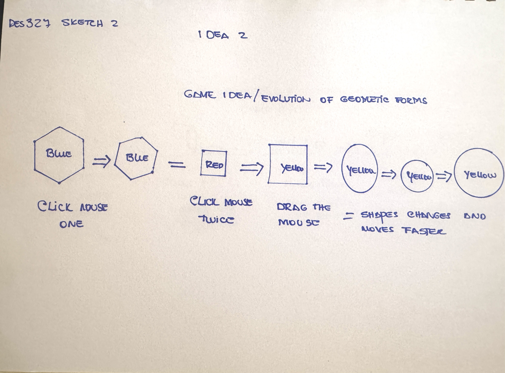
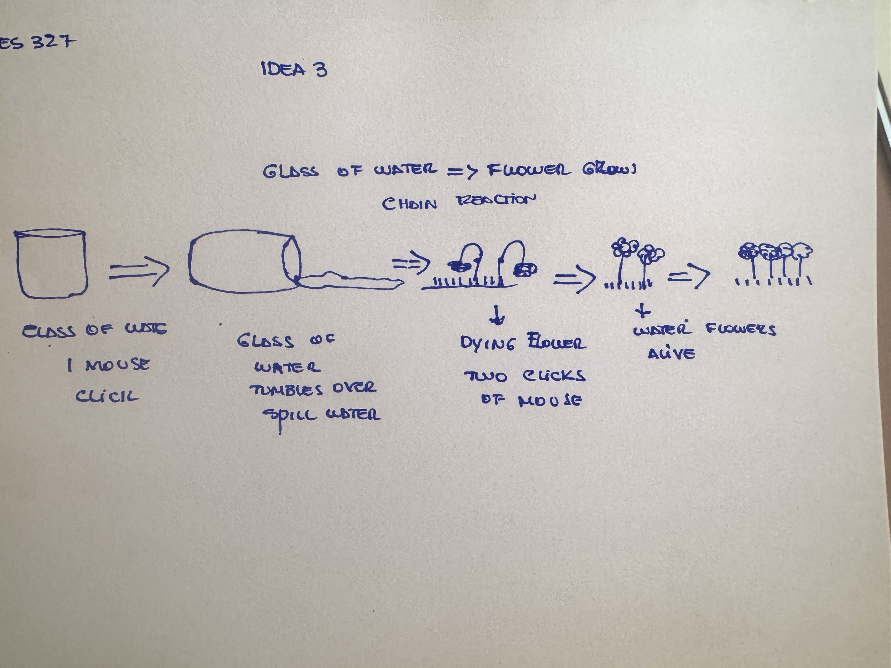

Micro Project Ideas
Idea One: Reading Interaction
This system is designed for an interactive reading where the user clicks the mouse and the
letter in each page will be shuffled. Once the user holds or drags the mouse a page forms with
words telling a short story or telling.
- What is the core rule of this system?
The core rule of the system is to make the reader engage with the
reading. It is also to make the reader decide whether they want to read and
know what the words on the next pages are; this creates a sense of curiosity.
- What changes over time?
What changes over time is that the pages flips animation unfolds and
the narrative advances and therefore decreases the remaining
contents.
- Where does the system become uneven?
The system might become uneven once the reading and clicking
progresses; each click is one step forward where the user cannot go
back or reverse the click.
- Why is this idea worth developing further?
I think this idea is worth developing because it can transform the
reader's experience. It creates a sense of curiosity with each click of
the mouse.

Idea Two: Game Idea - Evolution of Forms
This sketch resembles a game where the user clicks or holds the mouse. The shapes will
appear and as the user holds the mouse or clicks a certain number of times the shapes will
move faster and change from square to circle simultaneously changing colors.
- What is the core rule of this system?
The core of this system is a pure interaction system about
transformation.
- What changes over time?
What changes over time is the color and size of the shapes together
with the changes in shapes from square circle. Also edges might
soften or images get distorted before taking their final shape.
- Where does the system become uneven?
Well I did not use the triangle on this animation on purpose and the
user might expect to see a triangle before a shape changes from
square into a circle.
- Why is this idea worth developing further?
I think this idea is worth developing because it is a simple visual interaction
where the user has control on each stage of this interaction.

Idea Three: Glass of Water - Flower Grows - Chain Reaction
This sketch is about intervention and consequences. In this sketch a glass tilts over to spill its
contents. The water then falls on the grass where there are dying flowers. The flowers come
back alive and multiply.
- What is the core rule of this system?
The core rule of this system is when the glass tilts the water flow.
When the water flows it water the flower and the flowers grow.
- What changes over time?
What changes over time is the hydration of the soil which helps the
flower to grow. And also the flower not only grows from a few to
more in quantity.
- Where does the system become uneven?
The system might become uneven where not all the water reaches
the flower to allow it to grow for a longer time. Or maybe the delay of
the flower growing.
- Why is this idea worth developing further?
I think this idea is worth developing because it is an example of a
small action that has a great impact.
